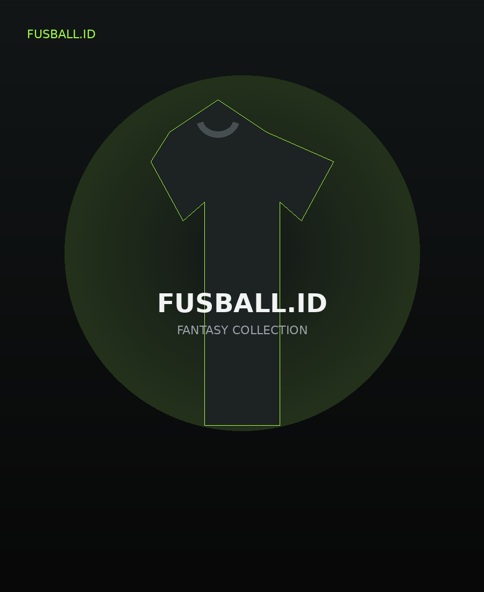

Brief tim
Warna, identitas, jumlah anggota, sponsor, kerah, dan referensi.
Jersey fantasy original Fusball.id untuk kamu yang melihat sepak bola sebagai budaya, identitas, dan cara berekspresi.

FUSBALLFusball.id berada di antara football culture, koleksi jersey, dan identitas tim. Fantasy untuk dipakai. Custom untuk dimiliki.
Warna, identitas, jumlah anggota, sponsor, kerah, dan referensi.
Konsep divisualkan dan dikembangkan melalui proses konsultasi.
Revisi sampai desain final siap masuk ke tahap PO.
Setelah approved, pesanan masuk ke proses produksi dan pengiriman.
Ya. Koleksi fantasy yang sedang dibuka PO dapat dipesan satuan selama periode pemesanan.
Custom difokuskan untuk tim. Mulai dari brief, konsultasi, desain, revisi, persetujuan, lalu masuk PO dan produksi.
Ya. Admin dapat mengunggah foto DEPAN dan BELAKANG sehingga katalog menampilkan dua sisi produk dengan lebih jelas.
Setelah login, status pesanan dapat dilihat di halaman Akun dan diperbarui oleh admin sepanjang proses.